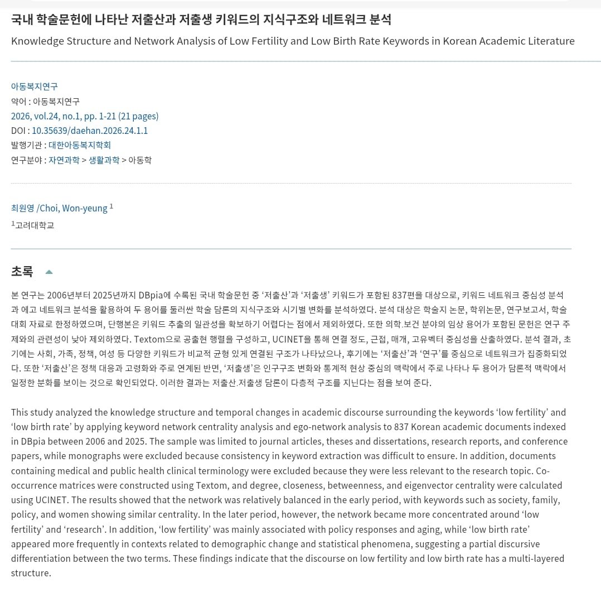
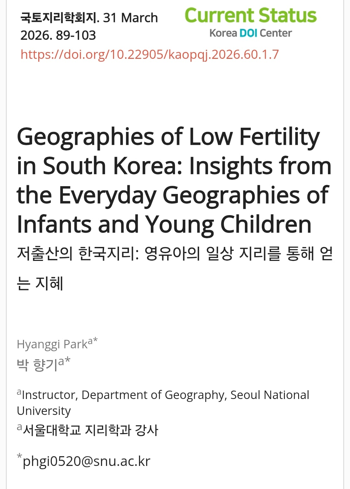
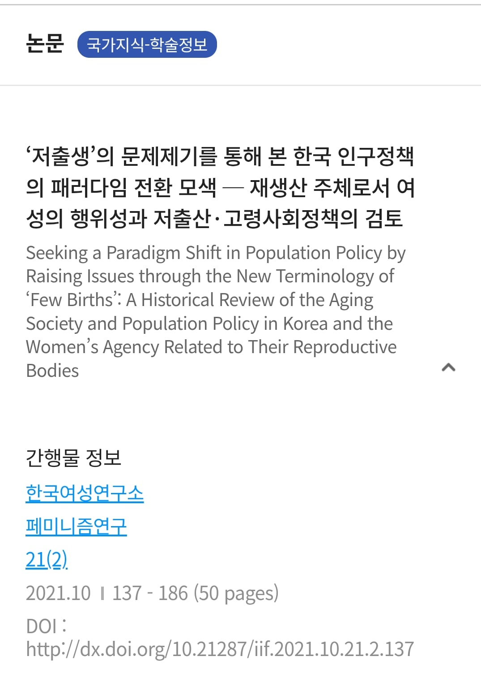
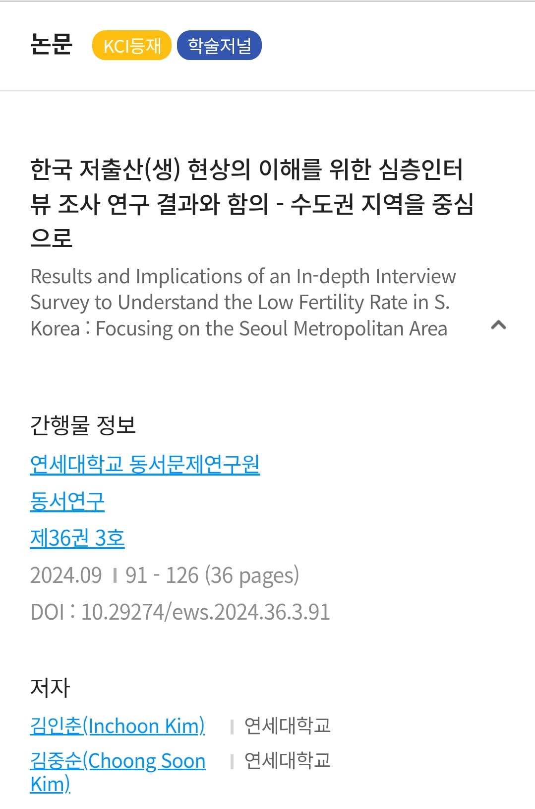
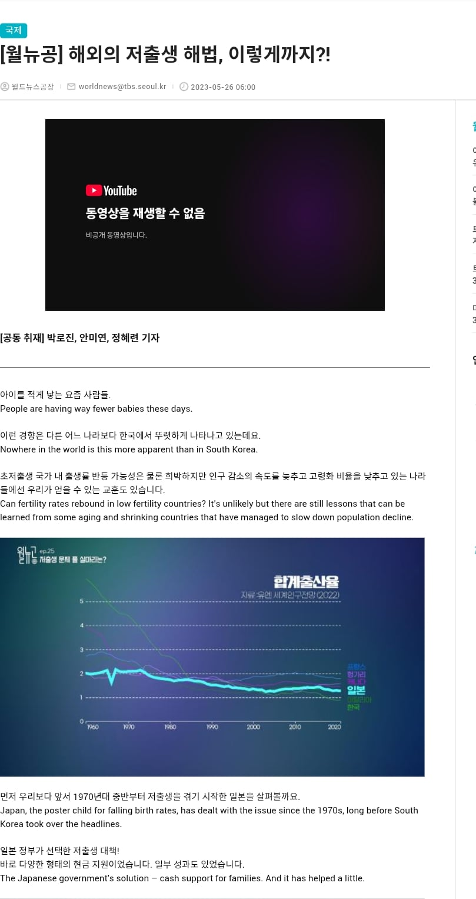

저출산 = low fertility rate = 가임여성이 일평생 낳는 아이 수의 평균인 합계출산율이 낮다
저출생 = low birth rate = 인구 천 명당 출생아 수인 조출생률이 낮다
이는 분명히 분리되는 담론임

원래는 이렇게 low fertility rate 관련에는 저출산을 노빠꾸로 박아버리는 게 정상이다

그러나 페미들이 이런 식으로 low fertility라는 어휘 번역에 개수작을 부린 결과

학자들은 이렇게 low fertility에 저출산(생)이라고 붙이며 눈치를 보거나 하게 됨

일반인에 이르는 자료들에서는 fertility가 원문이어도 개무시 때리고 저출생으로 번역해버리는 참사를 벌인다
이딴 짓을 벌이는 여성학이 학문?
단어를 바꾸는게 그냥 자기들 기분 나빠서라는게 문제임..